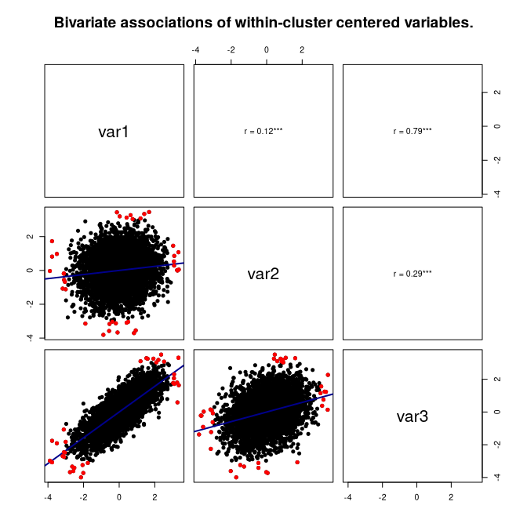
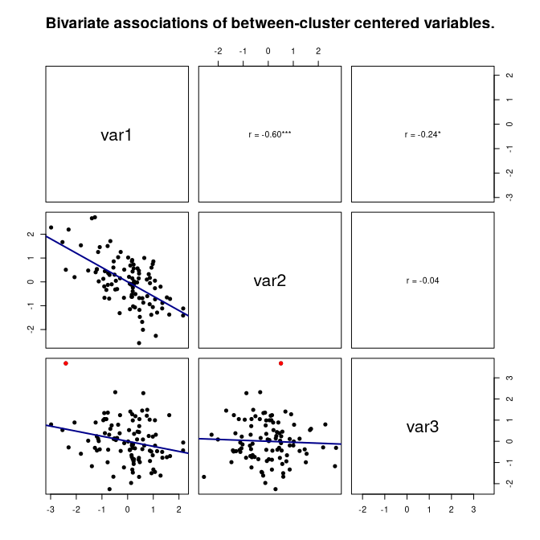

wbCorr computes within- and between-cluster correlations for clustered data, such as daily diary data with repeated measures nested in persons, or data from dyads and teams.
In such data, two variables can be related in two ways:
- Within clusters: When a person scores higher than usual on one variable, do they also score higher than usual on the other?
- Between clusters: Do persons with a higher average on one variable also have a higher average on the other?
These two correlations can differ in size and even in sign. A correlation over all rows mixes them. wbCorr reports both separately, with p-values, confidence intervals, and intraclass correlations (ICCs).
If you use wbCorr, please cite it as:
Küng, P. (2026). wbCorr: Bivariate Within- and Between-Cluster Correlations. https://doi.org/10.5281/zenodo.20357592
Installation
Install the released version from CRAN:
install.packages("wbCorr")Install the development version:
install.packages(
"wbCorr",
repos = c(
"https://pascal-kueng.r-universe.dev",
"https://cloud.r-project.org"
)
)Example
The package includes simulated daily diary data. 100 participants reported three variables (var1, var2, and var3) on 50 days. The data were simulated so that all within-person correlations are positive and all between-person correlations are negative.
library(wbCorr)
data("simdat_intensive_longitudinal")
diary <- simdat_intensive_longitudinal[c("participantID", "var1", "var2", "var3")]
correlations <- wbCorr(diary, cluster = "participantID")summary() shows both levels in one matrix. Within-person correlations are above the diagonal, between-person correlations below it, and ICCs on the diagonal.
summary(correlations, "wb")
#> $merged_wb
#> var1 var2 var3
#> var1 [0.51] 0.12*** 0.79***
#> var2 -0.60*** [0.49] 0.29***
#> var3 -0.24* -0.04 [0.49]
#>
#> $note
#> [1] "***p < 0.001, **p < 0.01, *p < 0.05"For var1 and var2, the two levels point in opposite directions. On days when participants report a higher var1 than usual, they also report a slightly higher var2 (r = 0.12). But participants with a higher average var1 have a lower average var2 (r = -0.60).
get_table() returns the full results with test statistics, degrees of freedom, confidence intervals, and p-values:
get_table(correlations)
#> $within
#> Parameter1 Parameter2 pearson's r t-statistic df 95% CI p
#> 1 var1 var2 0.12 8.53 4899 [0.09, 0.15] < .001***
#> 2 var1 var3 0.79 89.04 4899 [0.78, 0.80] < .001***
#> 3 var2 var3 0.29 21.50 4899 [0.27, 0.32] < .001***
#>
#> $between
#> Parameter1 Parameter2 pearson's r t-statistic df 95% CI p
#> 1 var1 var2 -0.60 -7.46 98 [-0.71, -0.46] < .001***
#> 2 var1 var3 -0.24 -2.43 98 [-0.42, -0.04] 0.017*
#> 3 var2 var3 -0.04 -0.44 98 [-0.24, 0.15] 0.659plot() shows the data behind each correlation. The lower panels show scatterplots with a regression line and outliers in red. The upper panels show the correlation and its significance stars.
plot(correlations, "within")
plot(correlations, "between")
Functions
| Function | Description |
|---|---|
wbCorr() |
Computes all correlations and ICCs. |
summary(), get_matrix()
|
Correlation matrices with significance stars: within ("w"), between ("b"), or both in one matrix ("wb", "bw"). |
get_table() |
Full tables with test statistics, confidence intervals, and p-values. |
get_ICC() |
ICC of each variable. |
plot() |
Scatterplot matrix of the within- or between-cluster parts. |
to_excel() |
Saves tables or matrices to an Excel file. |
Options
| Argument | Options |
|---|---|
method |
"pearson" (default), "spearman", or "auto" (Spearman for ordered factors, Pearson otherwise). |
inference |
"analytic" (default), "cluster_bootstrap", or "none" (correlations only). |
between_weighting |
"equal_clusters" (default) weights each cluster equally. "cluster_size" weights each cluster by its number of observations of both variables. |
confidence_level |
Level of the confidence intervals (default: 0.95). |
nboot |
Number of bootstrap samples (default: 1000). |
For example, the cluster bootstrap resamples whole persons, so its confidence intervals account for the dependence within persons:
set.seed(2026)
bootstrapped <- wbCorr(diary, cluster = "participantID", inference = "cluster_bootstrap")
get_table(bootstrapped, "between")
#> $between
#> Parameter1 Parameter2 pearson's r BC 95% CI bootstrap p
#> 1 var1 var2 -0.60 [-0.70, -0.47] < .001***
#> 2 var1 var3 -0.24 [-0.42, -0.04] 0.018*
#> 3 var2 var3 -0.04 [-0.22, 0.12] 0.610How the correlations are computed
- Each variable is split into its cluster means (between part) and the deviations from these means (within part). Cluster means use all available observations of a variable, as in
psych::statsBy(). - Each correlation uses all rows where both variables are observed.
- Within-cluster correlations correlate the deviations. Tests use N - k - 1 degrees of freedom, where N is the number of complete pairs and k the number of clusters they come from. These tests treat the deviations as independent, which is an approximation. The cluster bootstrap does not make this assumption.
- Between-cluster correlations correlate the cluster means. Tests use k - 2 degrees of freedom.
- Pearson p-values use the t distribution. Spearman p-values and analytic confidence intervals use the Fisher z-transformation. The cluster bootstrap reports bias-corrected (BC) confidence intervals.
- The ICC is the ICC(1,1) of the one-way random-effects model, estimated from ANOVA mean squares.
Use numeric or binary variables. wbCorr converts ordered factors to their level numbers; analyze them with method = "auto" or "spearman". Dummy-code nominal variables before use.
See ?wbCorr for details.
Questions and bug reports
Please report bugs or suggest improvements through GitHub Issues.